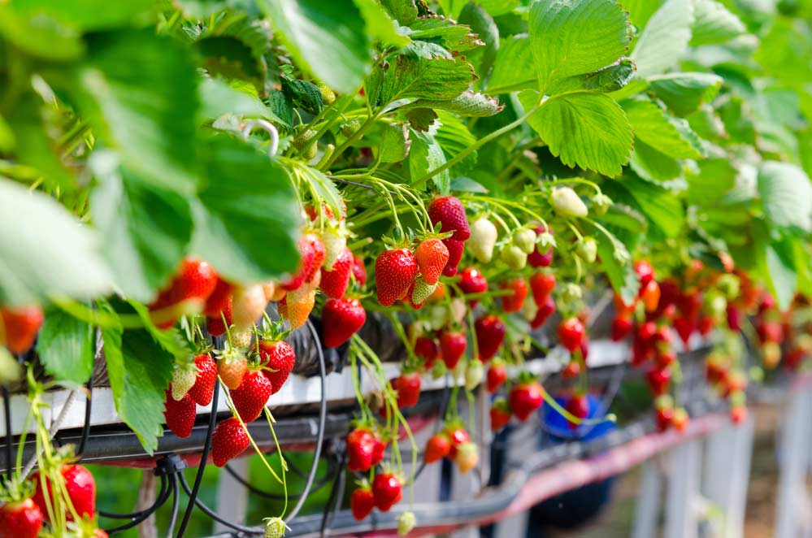
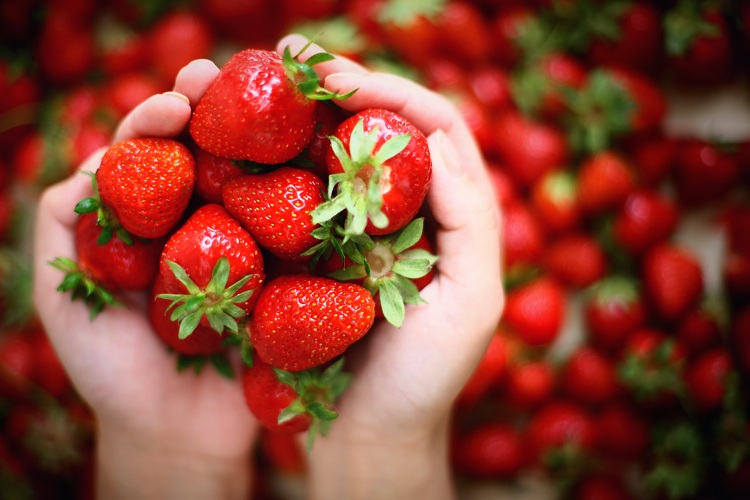

Origem
O morango é uma fruta vermelha, cuja origem é a Europa.
Produzida pelo morangueiro, é um fruto rasteiro.
Existem várias espécies de morango, sendo a fragaria a mais comum e cultivada em várias partes do mundo.
Benefícios
O ideal para o consumo é de duas a três unidades por dia.
O morango é também uma fruta rica em antioxidantes, como antocianinas e o ácido elágico, que conferem outros benefícios para a saúde.
Acredita-se que o morango possui propriedades que estimulam o crescimento e a saúde do cabelo
Rísco do Morango
Trata-se de um alimento, em geral, seguro, mas que pode trazer alguns riscos.
Entre eles está a presença de proteínas que podem gerar reações imunológicas em alguns indivíduos.
Além disso, o morango está entre os alimentos mais contaminados por agrotóxicos, o que pode causar alguns sintomas indesejados.